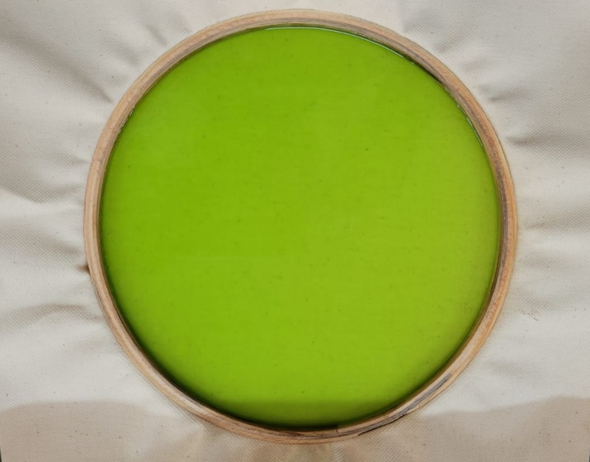

Chemical Community
Bio-fabric derived from Seaweed
The textile industry is known for its significant environmental impact, including high water consumption, chemical pollution, and waste generation. There is a growing concern for the need to reduce the industry's ecological footprint and transition towards more sustainable practices. This project aims to address this concern by exploring the development of a bio-based material for environmentally conscious fabrics, which can help mitigate the environmental impact of the textile industry.
Read More
